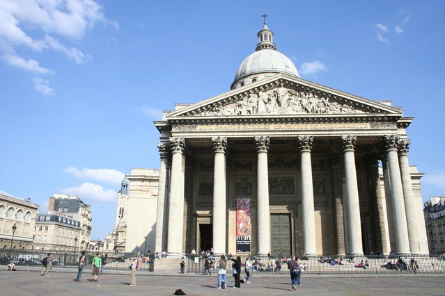
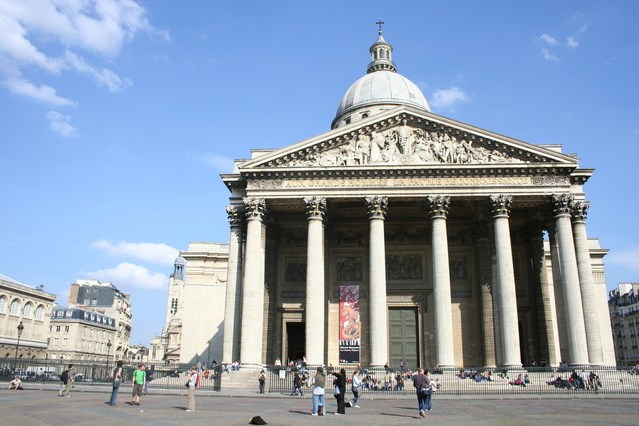
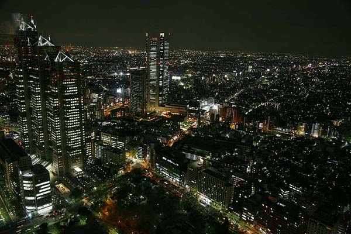
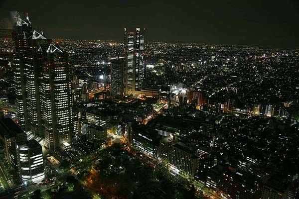

-
London


London is the capital city of England.
It is the most populous city in the United Kingdom, with a metropolitan area of over 13 million inhabitants.
-
Paris
 
Paris is the capital of France.
The Paris area is one of the largest population centers in Europe, with more than 12 million inhabitants.
-
Tokyo
 
Tokyo is the capital of Japan.
It is the center of the Greater Tokyo Area, and the most populous metropolitan area in the world.